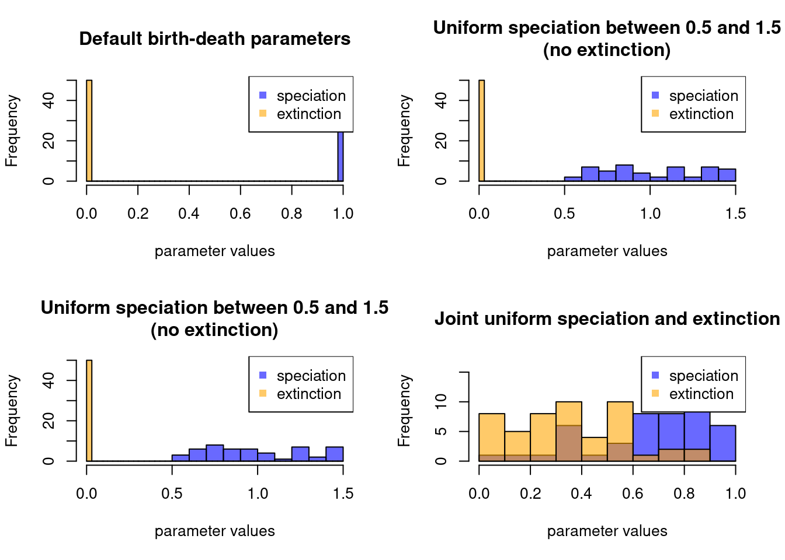
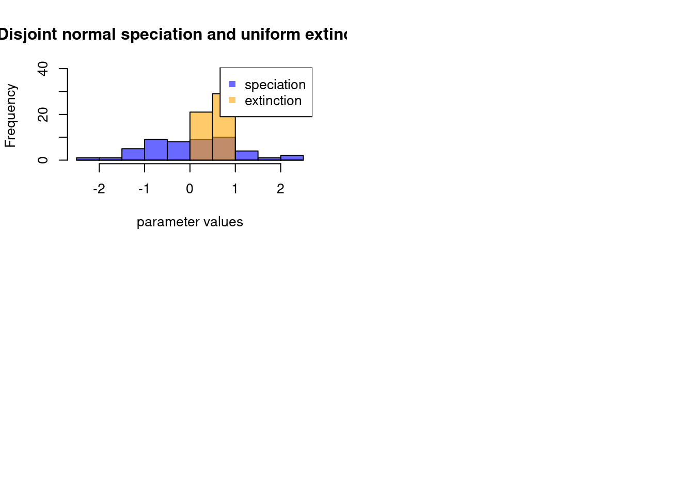

7 Other functionalities
7.1 make.bd.params
In most examples above, birth-death parameters where set as fixed values, i.e. a speciation rate of \(\lambda\) and an extinction rate of \(\mu\) throughout the simulations (with maybe some events modifying these rates).
However, it is of course possible to set these rates as specific or changing distributions!
You can do this using the make.bd.params function a provide either a vector of values:
## An example where the speciation is randomly sampled among three values
my_bd_params <- make.bd.params(speciation = c(1/3,42))
## Building a tree using this set of parameters
set.seed(123)
plot(dads(stop.rule = list(max.taxa = 50), bd.params = my_bd_params))
## Note the regions in the tree with short branches
## (that's the speciation being 1/3 while the others are speciation = 42) Or directly a function from which to sample:
## Another example where speciation is drawn from the interval (0, 1)
make.bd.params(speciation = runif)## ---- dads birth-death parameters object ----
## speciation: runif.
## extinction: 0.In this example, the "bd.params" object passed to the dads function will allow the birth-death process to sample the speciation parameter each time it is called (e.g. during the speciation/extinction step, the branch length step, etc.).
If using a function, you can fine tune the arguments to be passed to that function using the speciation.args or the extinction.args arguments (as a named list matching the function’s arguments):
## Speciation is drawn from the interval (0.5, 1.5)
make.bd.params(speciation = runif,
speciation.args = list(min = 0.5, max = 1.5))## ---- dads birth-death parameters object ----
## speciation: runif (with optional arguments).
## extinction: 0.When using distributions for both the speciation and extinction parameters, you can run into the undesired problem of having an extinction rate that is higher than your speciation rate (and thus your tree dying out - unless this is the desired behaviour).
You can avoid this problem by using the joint distribution argument this will ensure that the sampling of the extinction rate is always lower or equal to the speciation rate.
## Joint speciation and extinction sampled from uniform distribution
## with speciation always >= to extinction
make.bd.params(speciation = runif, extinction = runif, joint = TRUE)## ---- dads birth-death parameters object ----
## joint sampling for:
## speciation: runif.
## extinction: runif.Finally to avoid negative sampling values, you can use the argument absolute that will make all the sampled values positive.
This argument is set to TRUE by default so you shouldn’t have to worry about it most of the time unless you specifically need negative sampled values for your parameters.
## Making the speciation sampling always positive
make.bd.params(speciation = rnorm, absolute = TRUE)## ---- dads birth-death parameters object ----
## speciation: rnorm.
## extinction: 0.
## (using absolute values)The two other possible arguments for this function are test and update that work the same as for make.traits or make.modifiers
If you are a visual person and your bd.params objects are getting a bit too complicated to remember, you can always quickly plot them (the function will sample from the bd.params object and show the results):
par(mfrow = c(2,2))
plot(make.bd.params(), main = "Default birth-death parameters")
plot(make.bd.params(speciation = runif,
speciation.args = list(min = 0.5, max = 1.5)),
main = "Uniform speciation between 0.5 and 1.5\n(no extinction)")
plot(make.bd.params(speciation = runif,
speciation.args = list(min = 0.5, max = 1.5)),
main = "Uniform speciation between 0.5 and 1.5\n(no extinction)")
plot(make.bd.params(speciation = runif, extinction = runif, joint = TRUE),
main = "Joint uniform speciation and extinction")
plot(make.bd.params(speciation = rnorm, extinction = runif,
joint = FALSE, abs = FALSE),
main = "Disjoint normal speciation and uniform extinction")
7.2 drop.things
You can use the function drop.things to drop specific elements of the tree and data at the same time by providing the argument what to be "fossils" for tips that went extinct, "livings" tips that where alive at the end of the simulation or "singles" for internal nodes.
Alternatively you can use the function aliases drop.fossils, drop.livings or drop.singles for the exact same results:
## A random tree with fossils and traits and internal nodes every 0.5 times
set.seed(3)
my_data <- dads(stop.rule = list(max.taxa = 20),
bd.params = list(speciation = 1, extinction = 1/3),
traits = make.traits(), save.steps = 0.5)
## A tree with 20 tips and 54 nodes
my_data$tree##
## Phylogenetic tree with 20 tips and 54 internal nodes.
##
## Tip labels:
## t1, t2, t3, t4, t5, t6, ...
## Node labels:
## n1, n2, n3, n4, n5, n6, ...
##
## Rooted; includes branch lengths.## And a dataset with 74 rows
dim(my_data$data)## [1] 74 1## Removing the fossil species
drop.things(my_data, what = "fossils")$tree##
## Phylogenetic tree with 8 tips and 31 internal nodes.
##
## Tip labels:
## t13, t14, t15, t16, t17, t18, ...
## Node labels:
## n1, n2, n7, n10, n11, n13, ...
##
## Rooted; includes branch lengths.dim(drop.fossils(my_data)$data)## [1] 39 1## Removing the living species
drop.things(my_data, what = "livings")$tree##
## Phylogenetic tree with 12 tips and 37 internal nodes.
##
## Tip labels:
## t1, t2, t3, t4, t5, t6, ...
## Node labels:
## n1, n2, n3, n4, n5, n6, ...
##
## Rooted; includes branch lengths.dim(drop.livings(my_data)$data)## [1] 49 1## Removing the internal nodes
drop.things(my_data, what = "singles")$tree##
## Phylogenetic tree with 20 tips and 19 internal nodes.
##
## Tip labels:
## t1, t2, t3, t4, t5, t6, ...
## Node labels:
## n1, n7, n33, n39, n54, n40, ...
##
## Rooted; includes branch lengths.dim(drop.singles(my_data)$data)## [1] 39 1## Removing the internal nodes AND the fossils
drop.singles(drop.fossils(my_data))## ---- dads object ----
## Simulated diversity data (x$tree):
##
## Phylogenetic tree with 8 tips and 7 internal nodes.
##
## Tip labels:
## t13, t14, t15, t16, t17, t18, ...
## Node labels:
## n7, n33, n54, n53, n34, n45, ...
##
## Rooted; includes branch lengths.
##
## Simulated disparity data (x$data):
## 1 trait for 1 process (A) with one starting value (0).7.3 "dads" internal utilities
The package also provides utilities for internal functions, namely for designing modifiers or events more easily.
These functions don’t do anything useful on their own but are optimised to be used internally in dads.
For all these functions, you can look at the internal manual for an example (i.e. using ?<function_name>)
So far the package has the following internals:
| Function | What it does | Where can it be used |
|---|---|---|
parent.traits |
selects the trait values of the current lineage’s parents (i.e. direct ancestor) | in make.modifiers |
taxa.condition |
provides a trigger for an event dependent on the number of taxa |
in make.events |
time.condition |
provides a trigger for an event dependent on time |
in make.events |
trait.condition |
provides a trigger for an event dependent on trait values |
in make.events |
"dads" objects can be directly plotted in dads using the S3 plot.dads function (or just plot(x) if x is of class "dads").